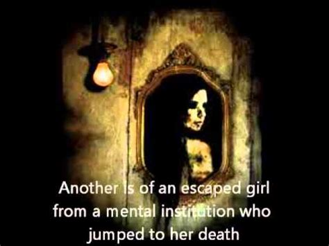

Jilted bride? Scary pig-nosed monster? The legend of the Suscon Screamer goes back more than a century in Pittston Township and the Suscon area of PA. Legends say the spirit of a screaming woman, or perhaps an unidentified beast, haunts the area of the now torn down one-lane Susquehanna Railroad Bridge, also known as the Black Bridge.  The bridge used to carry trains along the Susquehanna Railroad, passing over Suscon Road in Pittston and causing the road to narrow to one lane. Legend says that if you stopped your car under the bridge at night, you would see the image of a young girl appear in your rear view mirror. She would give out a shriek and then disappear. There are of course many versions of this poor girl’s story. Some say that she was jilted bride who committed suicide from the bridge, others that she was an escaped asylum patient who did the same. Yet more recent tales say that she was a girl who was killed by the bridge on prom night, or a mother and her child who were in a crash on their way to the hospital. Each legend has one thing in common: they all died screaming. This apparition of a woman in white has also been spotted floating through the woods along the road, and her scream has been heard by many a passerby. Many say her spirit began to appear in the 1930s, others the 1970s. If the latter were to be true, then there is some validity to the legend. On September 30, 1969, 15-year-old Patricia Emlaw hitched a ride along Suscon Road from 26-year-old David Ash. The circumstances of the murder are unclear, but Ash slashed Emlaw’s neck several times with his knife and dumped her body by the Black Bridge on Suscon Road. She was found four days later by mushroom pickers, and Ash was found and confessed to the murder. He was charged with first degree murder and sentenced to life in prison, where he later died. It was around the time of her murder that reports of the spectral woman began appearing. Still, there are some who claim the Suscon Screamer was hanging out under that bridge much before poor Miss Emlaw got a ride home from the wrong guy. Many date back to the 1930s, and some even before. But these reports are perhaps unique because they do not mention the spirit of a girl. It seems Emlaw, or whoever, is not the only paranormal creature causing terror along Suscon Road. Suscon Road, especially the former sight of the Black Bridge, has had multiple and somewhat frequent reports of cryptid sightings dating back to at least the late 1800s. The first comes in the last years of the 19th century, when a watchman from a fire tower spotted a fire in the Suscon area. Firemen were dispatched, but as they were battling the flames they heard a frightening scream. Later, the watchman heard the scream coming from the charred area of land. He spotted a large creature with a pig-like snout walking toward him, sometimes on two legs and sometimes on four. As it came closer, it kept screaming louder. He hid until it went away. That’s not the only account of the porcine creature to come out of Suscon Road. In the 1970s, a hunter reported that he saw the terrifying creature while out in the woods. He gave the similar description of the pig-like snout, and said the creature had webbed feet with long claws, was about 6 feet long and gray in color. It also walked on both two and four legs. In May of 1976, a family spotted four large Bigfoot-like creatures by a lake near Suscon. Similar reports came out of nearby Harveyville in 1984. Multiple sightings of both Bigfoot and the screaming porcine creature have come out of Luzerne County, but most are concentrated in the Suscon area, especially along Suscon Road. In 1999, a large webbed-footed lizard creature was spotted in the woods along Suscon Road. Is the Suscon Screamer the ghost of Patricia Emlaw, or is it an unidentified porcine creature? Maybe it’s both. Maybe it’s Bigfoot, or maybe it’s the ghost of an escaped circus lion or panther, as some legends say. Whatever the case, families living along the road still report hearing screams come in the dead of night; some have even called the police because of them. A few other paranormal experiences have come from Suscon Road. There are apparently 18 street lamps along the road, but eleven are always shot out. But it’s a different eleven every night. There is an eerie radio silence that takes over in the area of the former Black Bridge, so if you’re having trouble finding it, just turn your music on and wait for it to stop. Glowing orbs and the sound of a phantom train rolling over the torn down bridge have also bee reported.